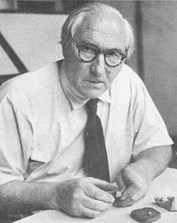

Biographien: Louis Leakey

Few people have had more impact on the study of human origins than the brilliant, passionate, energetic, eccentric and occasionally erratic Louis Leakey.Louis Seymour Bazett Leakey wurde am 7. August 1903 in der Kabete Mission, neun Meilen von Nairobi, Kenia, geboren. Seine Eltern, Harry und Mary Leakey, waren englische Missionare bei der Kikuyu-Stammesgruppe, und trotz kurzer Aufenthalte in England während seiner Kindheit wuchs Louis mehr afrikanisch als englisch auf. Er spielte mit Afrikanern, lernte zu jagen, sprach Kikuyu so fließend wie Englisch und wurde als Mitglied der Kikuyu-Stammesgruppe eingeweiht. Mit 13 Jahren, nachdem er Steinwerkzeuge entdeckt hatte, erfasste ihn eine Leidenschaft für die Vorgeschichte, und er beschloss, mehr über die Menschen zu erfahren, die sie herstellten. 1922 begann er sein Studium an der Universität Cambridge, doch ein Rugby-Unfall im folgenden Jahr hinderte ihn daran, weiter zu studieren, und er verließ die Universität, um bei der Leitung einer paläontologischen Expedition nach Afrika zu helfen. Er kehrte 1925 zurück, um sein Studium fortzusetzen, und schloss 1926 mit hervorragenden Ergebnissen in Anthropologie und Archäologie ab.
In den folgenden Jahren führte er mehrere Ausgrabungen in Ostafrika durch. Er war eindeutig ein aufstrebender Stern und erhielt 1930 für seine Arbeit einen Doktortitel. 1932 entdeckte er Fossilien in Kanam und Kanjera und behauptete, dass es sich um die ältesten wahren Vorfahren des modernen Menschen handelte. Nach seiner Rückkehr nach England wurden diese Funde weit verbreitet als wichtige Entdeckungen gelobt, und Louis' Stern stieg noch höher. Als Reaktion auf einige Zweifel lud er den Geologen Percy Boswell ein, die Stätten während seiner nächsten Expedition (1934–1935) nach Afrika zu besuchen. Leider bedeutete eine Kombination aus unzureichender Dokumentation und Pech, dass Leakey nach Boswells Ankunft die Stätte nicht zuverlässig identifizieren konnte. Zurück in England schadete Boswells Bericht Leakeys wissenschaftlichem Ruf erheblich.
Im Jahr 1928 heiratete Louis Frida Avern, eine Engländerin, die er in Afrika kennengelernt hatte. Während eines Aufenthalts in England im Jahr 1933 traf er Mary Nicol, eine wissenschaftliche Illustratorin, und begann bald eine Affäre mit ihr, obwohl er bereits ein junges Kind hatte und seine Frau schwanger war. Mary begleitete ihn auf seiner nächsten Expedition nach Afrika und kehrte 1935 nach Hause zurück, um bei ihm zu leben. Im Jahr 1936 reichte seine Frau Frida die Scheidung ein, und Louis und Mary heirateten Ende desselben Jahres. Die Skandale um sein Privatleben sowie die Fiascos bei Kanam und Kanjera zerstörten effektiv Louis' vielversprechende akademische Karriere an der Universität Cambridge. Ohne einen festen Job verdiente er sich ein kleines Einkommen durch Vorträge und Veröffentlichungen, und im Jahr 1937 kehrte er nach Afrika zurück, um eine umfangreiche ethnologische Studie über das Kikuyu-Volk durchzuführen.
Während des Zweiten Weltkriegs leistete Louis Aufklärungsarbeit, doch zwischen seinen kriegsbedingten Verpflichtungen setzten er und Mary ihre archäologischen Arbeiten fort. 1941 wurde er zum Ehrenkurator des Coryndon-Museums (später Kenia Nationalmuseum) ernannt, und 1945 nahm er eine schlecht bezahlte Stelle als Kurator des Museums an, um seine paläontologischen und archäologischen Arbeiten in Kenia fortsetzen zu können. 1947 organisierte Louis den ersten Panafrikanischen Kongress für Vorzeit, ein erfolgreiches Ereignis, das dazu beitrug, seinen Ruf wiederherzustellen, und viele Wissenschaftler mit der großen Menge wichtiger Arbeiten bekannt machte, die die Leakeys seit dem Kanam/Kanjera-Skandal erbracht hatten.
Er und Mary gruben in den 1950er Jahren an vielen Stätten weiter, insbesondere in der Olduvai-Schlucht in Tanganjika (heute Tansania). Obwohl die Entdeckung eines wichtigen Miocän-Affenfossils 1948 ihnen einige Aufmerksamkeit einbrachte und zu mehr Finanzierung führte, begrenzten finanzielle Engpässe stets die Menge der durchgeführten Arbeiten. Dennoch machten sie weiterhin bedeutende Entdeckungen.
Im Jahr 1959 fand Mary den ersten bedeutenden hominiden Fossilfund, einen robusten Schädel mit riesigen Zähnen. Er wurde in Ablagerungen entdeckt, die auch Steinwerkzeuge enthielten, und Louis, wie üblich, schürte seine Bedeutung, indem er behauptete, es handle sich um einen Vorfahren des Menschen, und nannte ihn Zinjanthropus boisei. Für alle anderen schien er deutlich unmenschlich und am ähnlichsten zu robusten Australopithecinen. Dennoch war es ein bedeutender Fund, der ihnen enorme öffentliche Aufmerksamkeit einbrachte. Das National Geographic-Magazin veröffentlichte den ersten von vielen Artikeln über die Leakeys und ihre Funde und stellte eine beträchtliche Finanzierung bereit, die es den Leakeys ermöglichte, den Umfang ihrer Ausgrabungen in Olduvai erheblich zu erweitern. Innerhalb weniger Jahre hatten sie viele weitere hominide Fossilien gefunden, darunter einige, die als menschliche Vorfahren und Werkzeughersteller weitaus plausibler erschienen als Zinj. Im Jahr 1964 benannten Louis, zusammen mit Phillip Tobias und John Napier, die neue Art Homo habilis. Obwohl ursprünglich umstritten, wurde habilis schließlich weithin als eine Art anerkannt.
Bis in die 1950er Jahre litt die Ehe von Louis und Mary vor allem unter Louis' untreuen Beziehungen, doch sie blieben zusammen, hauptsächlich wegen ihrer Kinder. In den 1960er Jahren konzentrierte sich Mary weiterhin auf die Olduvai-Schlucht, während Louis zwischen vielen anderen Projekten hin- und herwechselte. Besonders hervorzuheben ist, dass er verantwortlich für die Einleitung von Jane Goodalls jahrzehntelanger Feldstudie an Schimpansen in der Wildnis war, sowie für ähnliche Projekte von Dian Fossey (für Gorillas) und Birute Galdikas (für Orang-Utans). Er war auch an einem Primatenforschungszentrum, Ausgrabungen in Äthiopien und einer Suche nach alten Menschen in den Calico Hills in Kalifornien beteiligt (dieses letzte Vorhaben galt bei den meisten Wissenschaftlern fast als verrückte Idee), unter anderem. Darüber hinaus unternahm er viel Reisen, hielt Vorträge und sammelte Spenden, größtenteils in Amerika, wo er außerordentlich beliebt war. Zu allem Überfluss verschlechterte sich seine Gesundheit rapide, und er litt unter schweren medizinischen Problemen. Er kollabierte und starb im Oktober 1972 in England im Alter von 69 Jahren.
Einige Tage vor seinem Tod hatte sein Sohn Richard ihm den gerade entdeckten Fossilien-Schädel ER 1470 gezeigt, der Louis' lang gehegten Auffassung zu unterstützen schien, dass die Gattung Homo eine lange Geschichte hatte und nicht von Australopithecinen abstammte. Dies führte auch zu einer Versöhnung zwischen Louis und Richard, die sich seit einigen Jahren persönlich und beruflich gestritten hatten. Louis' letzten Jahre waren sehr schwierig gewesen, aber diese Entwicklungen mussten zumindest seine letzten Tage erhellt haben.
Referenzen
Leakey L.S.B. (1974): By the evidence: memoirs, 1932-1951. New York: Harcourt Brace Jovanovitch.Morell V. (1995): Ancestral passions: the Leakey family and the quest for humankind's beginnings. New York: Simon & Schuster.
Siehe auch:
Louis Leakey und die menschliche EvolutionAndere Quellen
Sonia Cole (1975): Leakey's Luck. London: Collins.Louis Leakey (1937): White African. London: Hodder & Stoughton.
Die Geheimnisse der Vergangenheit der Menschheit entdecken, von Ted Weiman
Louis Seymour Bazett Leakey (1903-1972)
Diese Seite ist Teil der FAQ zu fossilen Menschenaffen im TalkOrigins-Archiv.
Startseite |
Arten |
Fossilien |
Kreationismus |
Lektüre |
Referenzen
Illustrationen |
Neuigkeiten |
Feedback |
Suche |
Links |
Fiktion
http://www.talkorigins.org/faqs/homs/lleakey.html, 04/24/98
Copyright © Jim Foley
|| E-Mail mir